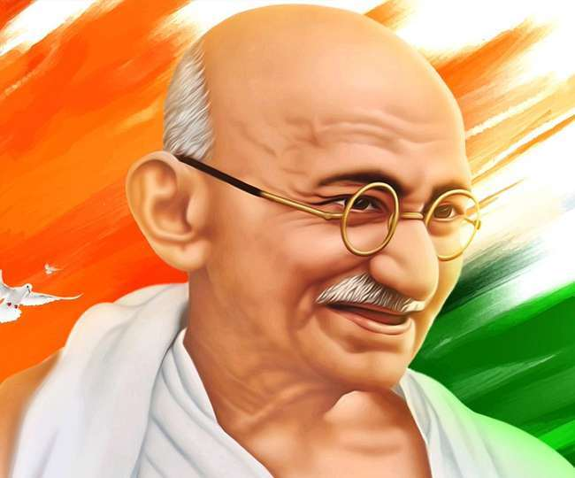

Full Name : Mohandas Karamchand Gandhi
Date Of Birth : 2nd October 1869
Place Of Birth : Porbandar, Gujrat
Father Name : karamachan Uttamchand Gandhi
Mother Name : Putalibai
Profession : Barrister(Advocate), Politician, Author
Father Profession : Diwan(Cheif Miniser) of Porbandar
Wife Name : Kastubai Makhanji Kapadia (Marries in 1883)
Son's Name : Harilal, Manilal, Ramdas and Devdas
Date of Death : 30 January 1948
Reason of Death : Short by Nathuram Godse
2. ChildHood
Mohandas Gandhi was born on October 2,1869, at Porbandar, on the western coast of India. His grandfather Uttamchand Gandhi and father Karamchand Gandhi occupied the high office of the diwan (Chief Minister) of Porbandar. To be Diwan of one of the princely states was on sinecure. Porbandar was one of some three hundred ‘native’ states in western India which were ruled by princes whom the accident of birth and the support of the British kept on the throne.
3. Education
The educational facilities at Porbandar were rudimentary; in the primary school that Mohandas attended, the children wrote the alphabet in the dust with their fingers. Luckily for him, his father became dewan of Rajkot, another princely state. Though Mohandas occasionally won prizes and scholarships at the local schools, his record was on the whole mediocre.
4. political
Took leadership of the Congress in 1920 and began escalating demands until on 26 January 1930 the Indian National Congress declared the independence of India. The British did not recognise the declaration but negotiations ensued, with the Congress taking a role in provincial government in the late 1930s.
5. Momentems
Champaran Movement in 1917
Kheda Movement in 1918,
Khilafat Movement in 1919
Non-cooperation Movement in 1920,
the Quit India Movement in 1942
Civil Disobedience Movement.
6. You
He encouraged young people to sweep away prejudices and gave them new values for living. He stressed the importance of Truth and Non-violence and called the youth to “Be Fearless”. Gandhi is one person who realized the power and potentiality of youth, understanding the dynamics of social change.
7. Death History
The 20th century’s most famous apostle of non-violence himself met a violent end. Mohandas Mahatma (‘the great soul’) Gandhi, who had taken a leading role in spearheading the campaign for independence from Britain, hailed the partition of the sub-continent into the separate independent states of India and Pakistan in August 1947 as ‘the noblest act of the British nation’.

Jai Hind